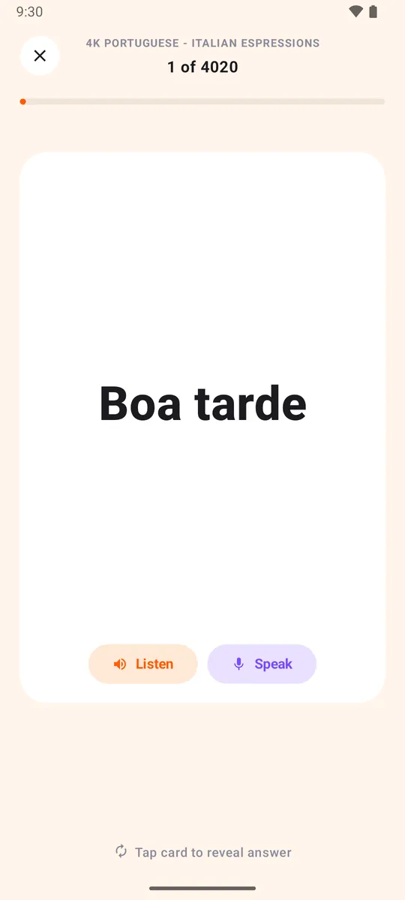
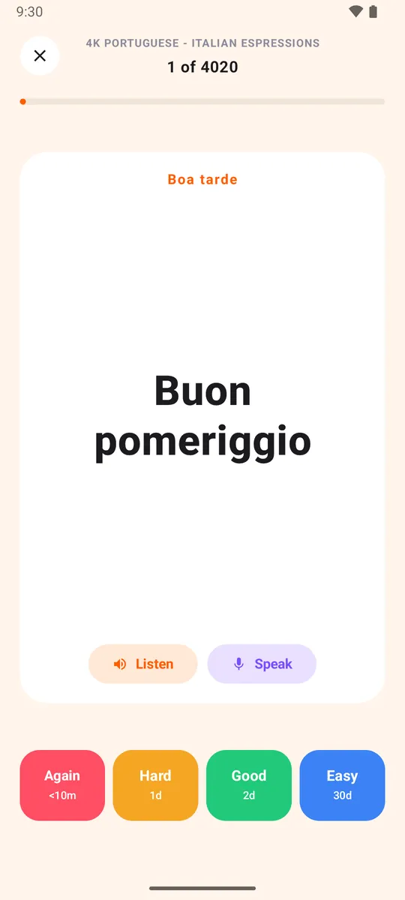
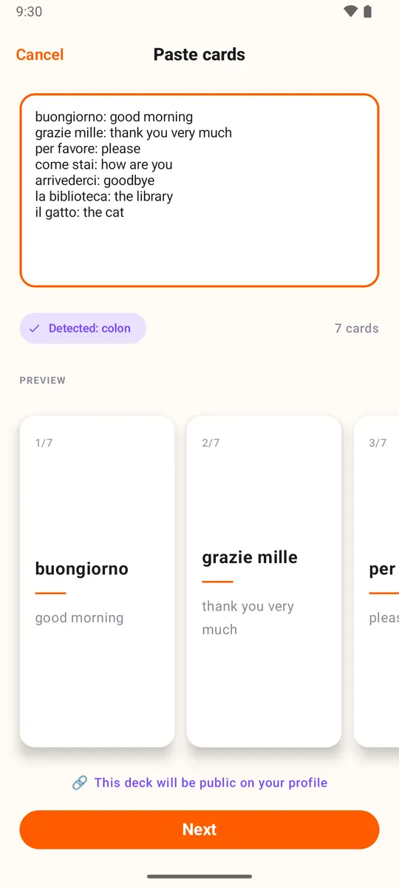
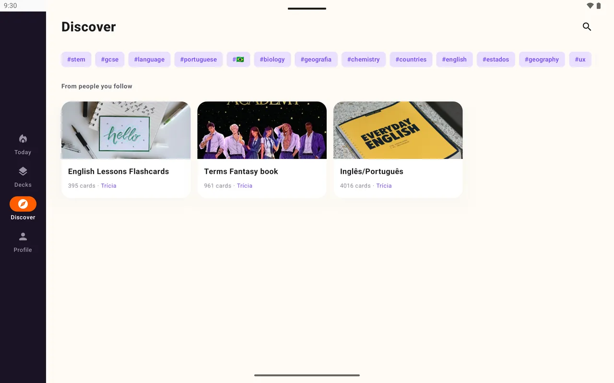

Listen
Every card is read aloud in its own language.
For language learners
Hear every word, say it out loud, and let spaced repetition bring it back right before you forget.
Free. No ads. Open source.

Every card is read aloud in its own language.
Say the answer and Loopky checks your pronunciation.
Type the answer to practise spelling and accents.
Reverse cards train you from and into the language.
Each side of a deck has its own language, from Japanese to Brazilian Portuguese. The voices come from your phone, and recordings are never stored.

Paste a word list from your notes or a spreadsheet. Loopky finds the separator and makes the cards. Or ask an AI to write the deck.

Discover lists public decks by language and topic. Follow one, or clone it and make it yours.

Yes. Speak mode uses your device's speech recognition to grade the answer. Loopky does not store or upload the recording.
Yes. All three are supported for listening and speaking, and Type mode works with your phone's keyboard.
Duolingo teaches a fixed course. In Loopky you choose or build the decks, and spaced repetition decides when each card returns.
A few minutes a day is enough.